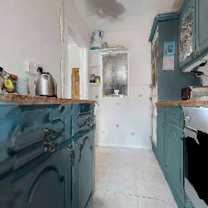
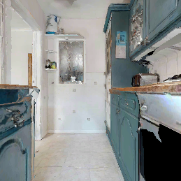
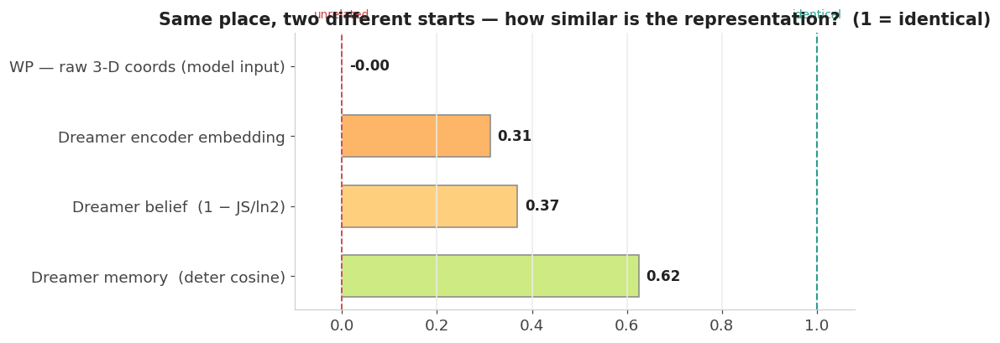
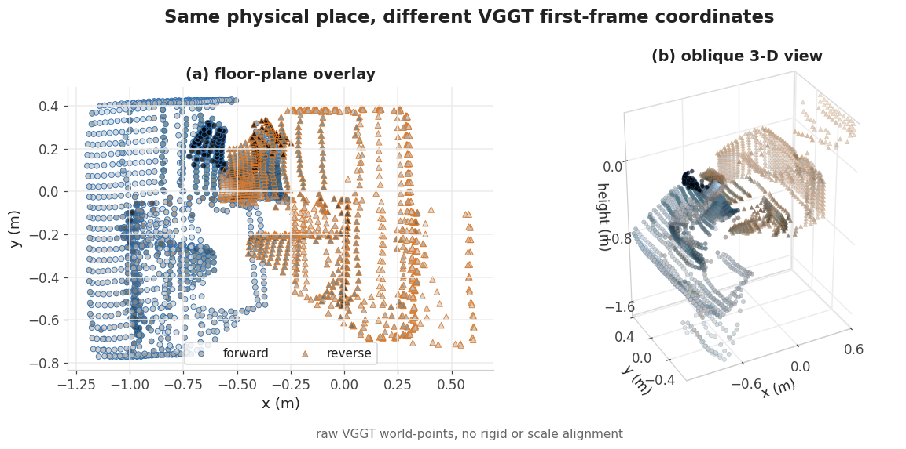
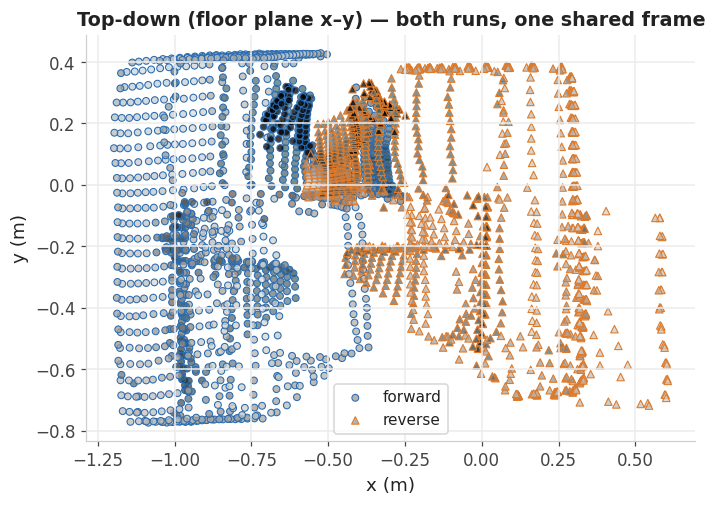
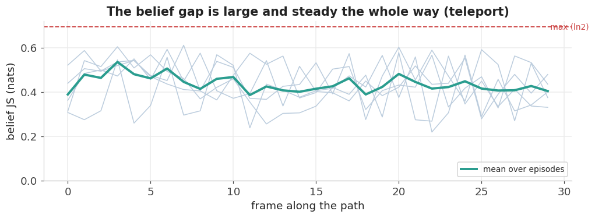
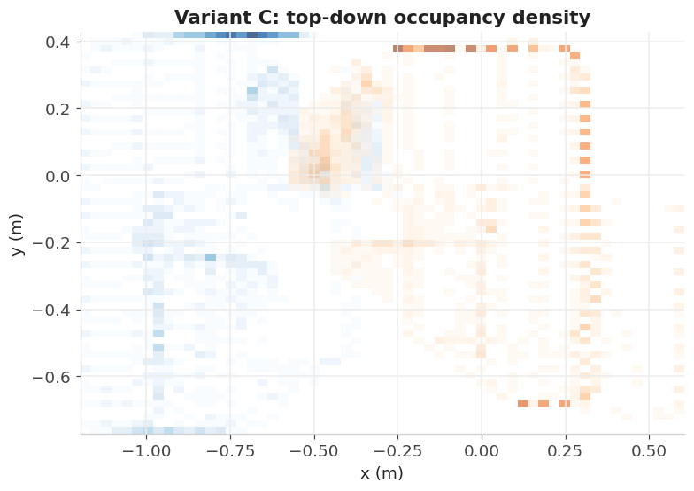

Supervisor Meeting · Experiment 1
VGGT First-Frame Invariance
← Index
Kernaussage
Beim gleichen physischen Viewpoint ist die vom Modell konsumierte VGGT-Repräsentation stark abhängig davon, welches Bild im Streaming-Fenster als erstes Referenzbild verwendet wurde. Im sauberen Teleport-Protokoll ist das RGB-Bild identisch; trotzdem sind raw World Points nahezu unkorreliert und der Dreamer-Belief bleibt deutlich verschieden.
Quelle: code/docs/3d-invariance-vggt-first-frame.html; R2Dreamer L1, 2M-step checkpoint, HM3D house fK2vEV32Lag.basis.glb. Keine starre oder skalierende Alignment-Korrektur angewandt.
Versuchsaufbau
VGGT liefert World Points (37×37×3) und Camera Pose relativ zum ersten Frame des Fensters. Getestet wurden zwei Protokolle mit fünf Startposen und ca. 30 Frames je Sequenz:
- Navigate: Agent läuft real zurück; Positionen stimmen überein, Heading/RGB kann abweichen.
- Teleport: Agent wird auf exakt dieselben Forward-Posen gesetzt; Position, Heading und RGB sind identisch. Dadurch isoliert dieses Protokoll den Effekt der First-Frame-Referenz.




Zahlen
| Metrik | Navigate | Teleport (clean) |
|---|---|---|
| Raw WP cosine | 0.501 | -0.001 |
| Raw WP L2 | 33.354 | 49.322 |
| Encoder embedding cosine | 0.456 | 0.313 |
| Camera-pose cosine | 0.918 | 0.701 |
| Camera-pose L2 | 0.753 | 1.740 |
| RSSM belief JS | 0.440 nats | 0.437 nats |
| RSSM memory cosine | 0.637 | 0.625 |
Plots





Diskussion fürs Meeting
Warum relevant
Wenn dieselbe physische Situation je nach Episodenstart in einer anderen Repräsentation landet, muss Dreamer diese Referenzabhängigkeit zusätzlich lernen. Das kann Generalisierung und Replay-Mixing erschweren.
Was noch offen ist
Ob diese Nicht-Invarianz die Hauptursache für schwache ObjectNav-Performance ist, ist noch nicht bewiesen. Nächster Schritt: mit Performance-Ablationen verbinden und mögliche Normalisierung/Alignment-Varianten prüfen.